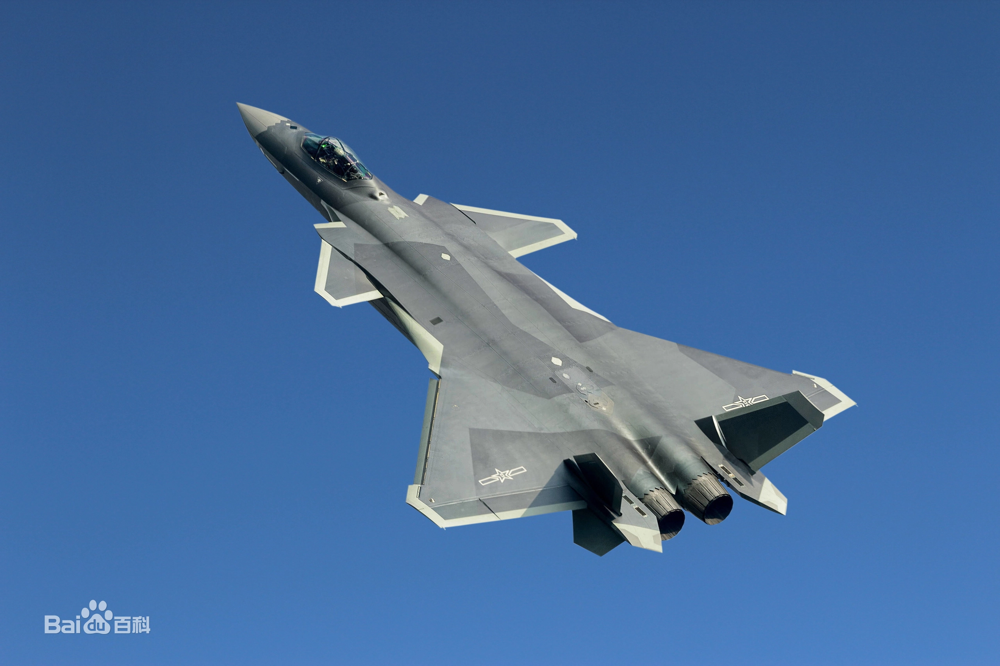

歼-20战机列装中国人民解放军空军王牌部队
2019年10月13日

歼-20（英文：Chengdu J-20，代号：威龙 ）
是中航工业成都飞机设计研究所研制的一款具备高隐身性、高态势感知、
高机动性等能力的隐形第五代制空战斗机，解放军研制的最新一代
（欧美旧标准为第四代，俄罗斯新标准为第五代）双发重型隐形战斗机，
用于接替歼10、歼11等第三代空中优势/多用途歼击机的未来重型歼击机型号，
该机将担负中国空军未来对空、对海的主权维护任务。
2019年10月13日，歼-20战机列装中国人民解放军空军王牌部队。
2021年6月18日，中国空军多支英雄部队列装中国国产隐身战斗机歼-20
。11月，媒体报道，歼-16D电子战飞机投入实战化训练，可与歼-20无缝伴随作战。
网站建设|隐私政策|联系平台
备案号：1234567890
捐赠热线：010-64790590
版权所有 © 2021 abcd.org.cn All rights reserved. 京ICP备123456789号